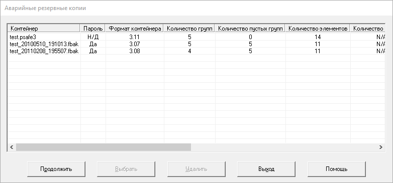

При нормальном выходе из Password Safe, вам будет предложено сохранить изменения в контейнере. Однако, в некоторых случаях Password Safe не имеет возможности вывести запрос (например, при завершении сеанса Windows, выключении или перезагрузке компьютера возможность вывода предупреждения зависит от версии ОС и особенностей выключения компьютера).
В этом случае Password Safe попытается создать «Аварийную резервную копию» (файл с расширением «fbak»). Файл создаётся в том же каталоге, где находится текущий открытый контейнер. В этом случае сам контейнер и «обычные» резервные копии не изменяются.
При следующем открытии исходного контейнера Password Safe проверит наличие аварийных резервных копий и, в случае обнаружения, выведет похожий на приведённый ниже диалог:
В первом столбце указывается имя контейнера, в остальных — основная информация о контейнере (та же, что отображается при открытии пункта меню «Файл→Свойства»). Затем идёт список доступных аварийных резервных копий. Свойства контейнера отображаются в том случае, если к нему подходит введённый для текущего контейнера пароль. В случае, если пароль не подходит к этим контейнерам, в столбце «Пароль» отображается «Нет» и столбцы со свойствами не заполняются.
Можно выбрать одно из следующих действий:
При нажатии данной кнопки Password Safe игнорирует наличие аварийных резервных копий и продолжает работу с выбранным контейнером.
Вместо текущего контейнера будет открыта выбранная аварийная резервная копия.
Выбранная аварийная резервная копия будет удалена. Файл перемещается в «Корзину», если ОС Windows поддерживает удаление в «Корзину» на данном диске (например, на локальных дисках). Иначе, файл будет удалён навсегда.
Если данный контейнер был открыт при запуске Password Safe, программа будет закрыта. В противном случае, открытие нового контейнера будет отменено, а предыдущий контейнер останется открытым.
Будет открыт данный раздел справки.
Предложения:
Примечание. Ни одно приложение не может сохранить данные при выключении питания компьютера во время работы или при фатальном сбое в компонентах ПК. Поэтому необходимо регулярно делать резервные копии важных данных на другие носители. Это могут быть Flash-диски, съёмные жёсткие диски, сетевые ресурсы, CD(DVD)-диски и прочие устройства, предназначенные для хранения данных. Резервные копии следует хранить в безопасном месте.